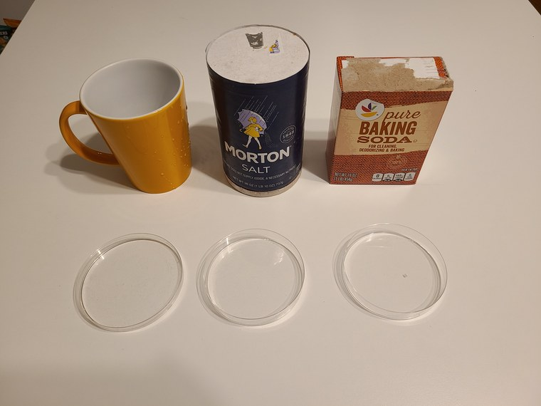
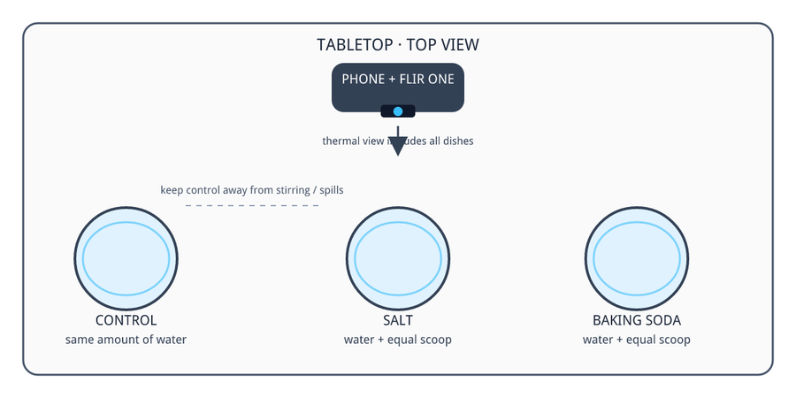
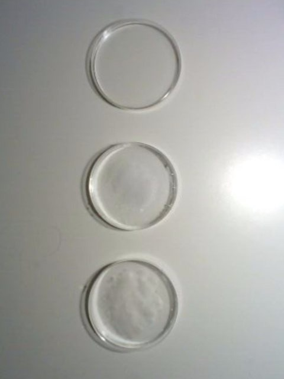
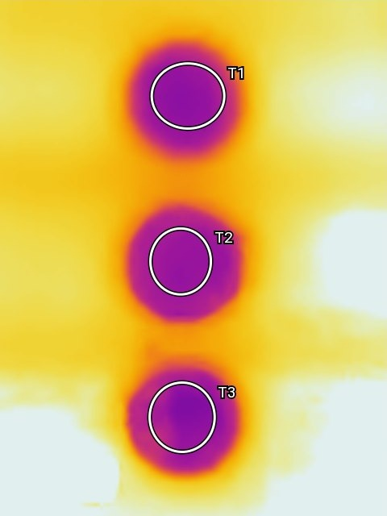
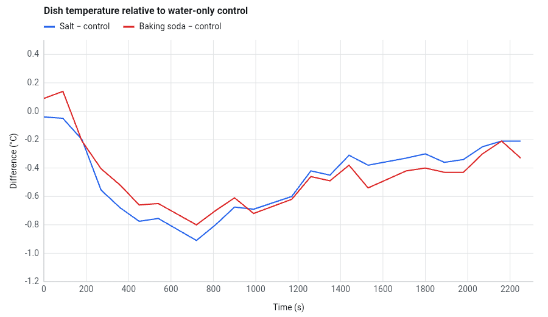
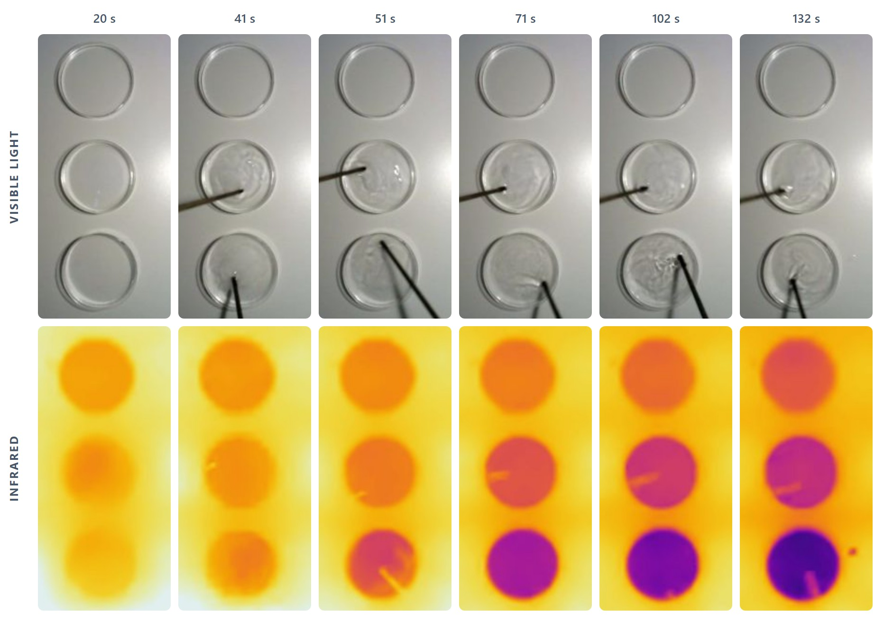
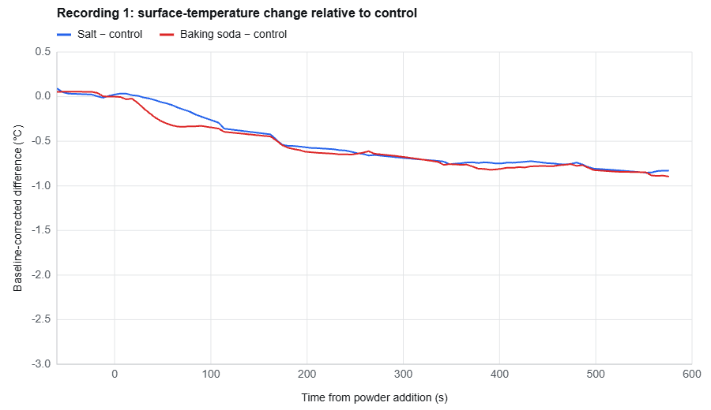
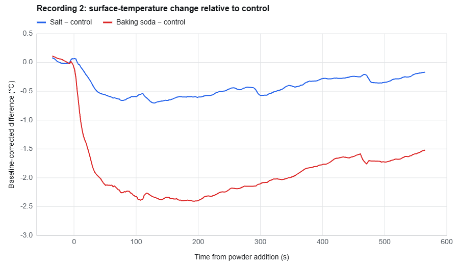

Can AI be a good lab partner?
A student asks a question. An AI agent chooses the materials, designs the experiment, reads the thermal recordings, says what to change in the next round, and writes the lab report.
Most school experiments begin with a lab manual. Someone has already decided what to mix, what to measure, and what the answer should be. The manual leaves out the parts of science that take scientists the most time: deciding what to test and what to test it with, finding out why a result did not match the prediction and what to change in the next attempt, and writing down what the data show and what they do not. A good lab partner helps with all these tasks.
The Experiments section of Infrared Explorer gives this role to an AI agent. A student starts with a question. The materials do not have to be named: the student can ask what could be done with things found in a kitchen or around the house, and the agent says which ones to use. The student can also put items on a table and share a photo of them, and the agent decides what to do with them. Either way, the agent designs the experiment.
The student then does the experiment by hand and records it with a thermal camera. The agent reads the temperature data in the recording, discusses the result, and says what to change in the next round. The two can go around this loop as many times as the question needs, and at the end, the agent writes a lab report. The agent never touches the bench: all it knows about the experiment comes through the camera and the conversation.
As an example, this article follows one experiment from the first question to the final report. We kept the start simple: a photo of salt, baking soda, and three dishes from a kitchen. The experiment went through two rounds, with the first result contradicting the agent's prediction. The agent ran on OpenAI's GPT-6 Luna. The window below is the experiment as we left it, with the whole conversation.
The experiment on the web. Scroll the conversation on the left, and open Plan, Captures, or Report on the right.
From a question to a plan
We put a mug, a canister of table salt, a box of baking soda, and three glass Petri dishes on a table, took a photo of them in the app (Figure 1), and typed one sentence:
What experiment can I do using these materials?
The agent named the experiment “Cooling When Powders Dissolve” (a slightly misleading name, given that table salt is granular, not a powder), drew the setup (Figure 2), and wrote a plan in three parts: question and prediction, setup, and recording. Every item in the photo got a job: a dish of plain water as the control, a dish each for the salt/water mixture and the baking soda/water mixture, and the mug to pour the water.


The agent's plan made a prediction with numbers in it: salt and baking soda both take in heat as they dissolve, so both of their dishes should cool, by a few tenths of a degree Celsius for salt and by perhaps 0.5 to 1.5 °C for baking soda. It also said what would count as a failed prediction: all three dishes exhibiting similar temperature changes, or the baking soda and salt dishes warming. The plan named a weakness in its own design before we did: equal spoonfuls are not equal masses.
The first round: a tie
We filled the three dishes with water, pointed a FLIR ONE Edge Pro straight down at them, and recorded for nearly 40 minutes in the app's time-lapse mode. We marked a reading area on the surface of the liquid in each dish (T1, T2, and T3 in Figure 3). About 100 seconds in, we put a scoop of salt into the middle dish and an equal scoop of baking soda into the bottom dish. The plan said to stir each for 10 seconds, but we did not stir.


Figure 3: The first run at 105 seconds in, seen in visible light (left) and infrared light (right). Top to bottom: plain water, water with salt, water with baking soda. The baking soda lies in a white heap on the bottom of its dish. The colors run from 18.2 °C (dark pink/purple) to 23.2 °C (white).
When the recording was added to the experiment, the agent went to work. It called up thermal and visible-light frames of its choosing, and it wrote and ran its own code to read the temperature inside the three reading areas. It worked out for itself which dish was the control, which had the salt, which had the baking soda, and when the two materials were added.
The agent also dealt with a problem in the data that we had not mentioned. A thermal camera closes its shutter from time to time to recalibrate, and ours did so 44 times during the recording. Each time, every reading in the frame dipped briefly by about 1 °C before coming back. The agent traced the dips to the recalibrations and left out the frames around each one. It also compared the three dishes with each other by subtracting the readings from the control (the plain-water dish) from the salt and baking soda dishes at each point in time. Figure 4 is the chart it drew.

All three water surfaces started at about 19.8 °C. Between 5 and 15 minutes, the salt dish read about 0.8 °C below the plain-water control and the baking soda dish about 0.7 °C below the control, and by the end, both had crept back to about 0.2 °C below. It was a tie between salt and baking soda, and the agent said plainly what that meant: the result did not support its own prediction that the dish with baking soda would cool more than the one with salt.
The first recording, with a chart of the salt and baking soda dishes' temperatures relative to the control. Press Play, or move a thermometer.
What the agent would change
The analysis had one thing wrong: the agent assumed that we had followed its plan, writing that the salt and the baking soda were “added and stirred.” We told it that nothing had been stirred, and it took the correction, stating, “I misread the setup.”
Then, the agent corrected us. When we asked why there was no difference in cooling between the salt and baking soda dishes, it answered, “There is a small difference in your capture,” and called it “a weak result, not a clear demonstration that salt cools more.” It looked up the chemistry and cited its source: mole for mole and fully dissolved, baking soda should cool the water more than salt.
The agent did not stop at explaining the tie. Its analysis had already said that a repeat of the experiment should have equal amounts of the two solids and every dish should be stirred equally. When we asked what would make the difference in cooling between salt and baking soda more noticeable, it gave a new design for the next round: weigh the two solids instead of measuring them by the scoop, 8 g of each in 100 mL of water (which is a ratio at which the baking soda can fully dissolve in the water); stir each dish the same way for the same time; and set the dishes on insulating pads. Only the stirring had been in the agent's first plan. The full exchange can be found near the top of this article.
The second round: stirring
We ran the experiment again with the same three dishes and the same scoops of salt and baking soda, and recorded another time-lapse, this time for 10 minutes. Of the agent's changes, we made only one: after the salt and the baking soda were added, we stirred those two dishes with sticks. We left the control alone (see Figure 5 below).

Again, the agent looked before it measured. In the visible-light frames, it saw the stirring sticks in the two dishes. It also caught that, before anything was added, the baking soda dish already read about 0.5 °C warmer than the control. Left alone, that offset would have hidden half a degree of cooling, so it measured each dish from its own starting temperature before comparing it with the control.
This time, the temperatures in the salt and baking soda dishes pulled apart within a minute. Between two and five minutes after the salt and the baking soda were added, the baking soda dish stayed about 2.3 °C below the plain-water control and the salt dish about 0.6 °C below. The baking soda dish did cool more than the salt dish, and by more than the predicted 0.5 to 1.5 °C. The agent still did not call the question settled: one run alone cannot show that the difference is repeatable, it said.
The second recording, with the same chart. Press Play to watch the baking soda dish at the bottom turn cold within a minute of the stirring.
The report, and the next round
When we asked for a report, the agent wrote one in five sections, from question and prediction to conclusion, with figures it made itself. It also checked its own work: it redrew one chart and later corrected a sentence of its own. We asked the agent to do the following:
Add a comparison of the two recordings to the report with two separate charts, one for each recording, explain why the results differ.
The agent went back to the recordings of both rounds of the experiment, ran one analysis on the two, and drew the two charts on the same axes (Figure 6).


Figure 6: The two charts in the final report, on the same axes: each dish's change from its own starting temperature, minus the control's change, against seconds elapsed since the salt and the baking soda were added. Left: the first run, with no stirring. Right: the second run, with stirring.
The revised report named a second difference between the runs that had not come up before: the water started about 3.5 °C warmer in the second run. It did not claim that the stirring was the cause, only that it could be. And it ended with the design of a potential third round:
A useful next test is several matched runs with weighed powder amounts, identical water volumes and stirring, and a clearly recorded addition time.
We have not run this round yet.
What the agent missed
The plainest clue to why the first run ended in a tie is in Figure 3, and the agent never mentioned it. Specifically, the baking soda lies in a white heap on the bottom of its dish. The agent had, in fact, called up that frame. It gave the general reason that a solid left unstirred may dissolve slowly, but it did not point to the heap of undissolved baking soda.
The chemistry is why the heap matters. Pulling ions out of baking soda or salt costs energy, and water molecules pay part of it back as they gather around each freed ion. For both salt and baking soda, the cost is larger than the payback, and the water makes up the difference by cooling. Per the information the agent looked up, baking soda takes about three times as much heat per gram as salt. But only what dissolves takes any heat, and baking soda is about a quarter as soluble as salt. A heap of baking soda in still water sits in a thin layer that is nearly saturated. The camera also reads only the top skin of the water. Stirring brought fresh water to the powder (without fully dissolving it) and brought the cold water up to the surface where the camera could read it.
While the agent did read the data critically, we also had to be critical of the agent.
Conclusion
This article uses salt and baking soda to illustrate a new way to learn science in the real world: students ask an AI agent a question, the agent designs an experiment with materials that are easy to find, and the students do it with their own hands. The agent reads the thermal recording and hands back measured data, an argument, and a design for the next round, and at the end, it writes the report. Was it a good lab partner? In this experiment, it was. It turned a question into an experiment with a prediction that could fail, held to the data when we overstated the result, gave way when we knew our own procedure better, and corrected its own report twice. Its work still had to be checked, like the work of any lab partner.
A thermal camera gives students thousands of thermometers where they once had one, a step from sensing to imaging. An AI agent that can read what those thermometers record takes the next step, from imaging to reasoning. By pairing the two, Infrared Explorer turns students' curiosity about ordinary things into genuine scientific investigations, wrong turns included.
← Back to Infrared Explorer